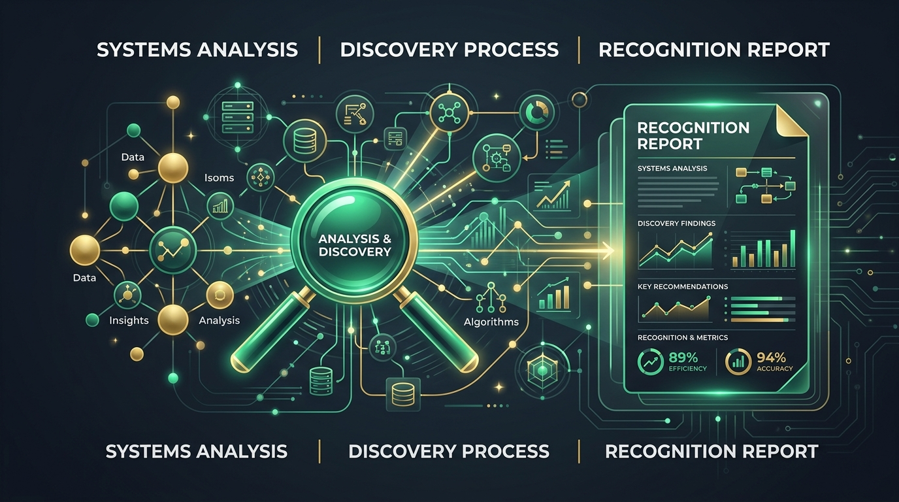

📚 Clase Completa Dedicada
Accedé a la guía completa, técnicas de relevamiento y checklists de validación.
Tras realizar las primeras entrevistas o minutas de reunión, el analista de sistemas redacta este informe para validar el entendimiento con el sponsor del proyecto. Sirve para definir los límites y el alcance del sistema a construir.
Estructura Estándar del Informe (UTN)
Ejemplo Real: Caso InfoLey Web
Informe redactado con base en la minuta de reunión del parcial K2001.
Fecha: 08 de Julio de 2024 | Analista: Equipo de Análisis
• Secretaría de Derecho Penal, S. de Derecho Administrativo y S. de Derecho Procesal: Encargadas de recibir y procesar consultas, y de cargar y publicar información jurídica en la web.
• Oficina de Jurisprudencia: Busca y registra fallos de la Corte Suprema.
• Gerencia de Infraestructura: Administra los servidores y la red del organismo.
- Falta de consistencia en el contenido de la web por desorganización en la carga legislativa.
- Omisiones en los procedimientos de validación del Manual de Técnica Legislativa por parte de los operadores.
Casos de Uso (Conceptos Fundamentales)
Conceptos base para entender la próxima clase de Casos de Uso.
Actor
Un rol externo al sistema que interactúa con él (ej: Ciudadano, Secretario, Jefe de Proyectos). ¡Ojo! Un actor no es una persona, es un rol.
Escenario
Una interacción específica actor-sistema. Un Caso de Uso agrupa múltiples escenarios (flujos exitosos y de error/excepción).
Relación Include
Relación obligatoria donde un Caso de Uso base requiere la ejecución de otro sub-caso (ej: Generar Expediente <<include>> Iniciar Sesión).
📝 1° Parcial Interactivo (08/07/2024)
Primer Parcial Tema 1 - Curso K2001. Resolvé las consignas de teoría y práctica.

Parte I: Preguntas de Teoría
Parte II: Verdadero o Falso (Justificado)
"En el relevamiento es mejor utilizar siempre preguntas cerradas porque de esa forma el usuario no explaya sobre aspectos de su trabajo que no son relevantes."
"En un sistema de inscripciones algunos ejemplos de requerimientos funcionales pueden ser el tiempo de generación del comprobante de inscripción, el tipo de letra utilizado y la definición de los datos a imprimir."
Parte III: Caso Práctico - Informe de Reconocimiento
De acuerdo a la minuta de reunión cargada en la sección teórica, validá las respuestas claves del informe:
- Responsabilidades/funciones específicas del sector de Derecho Penal, Administrativo y Procesal.
- Organigrama y dependencias de la Dirección de Sistemas.
En el informe de reconocimiento siempre se debe listar qué sectores formales carecen de funciones explicitadas en la minuta inicial.
Parte IV: Caso Práctico - Casos de Uso
Actor: Secretario
Precondición: El Secretario está logueado en el sistema.
Curso Alternativo de Error Clave (Materia incorrecta):
1. El sistema muestra: "No corresponde iniciar el proyecto en esta cámara".
2. El Secretario confirma la lectura y el sistema regresa al menú principal.
📝 2° Parcial Interactivo (11/11/2024)
Segundo Parcial Tema 1 - Curso K2001. Contenido ágil y de modelado estructural.